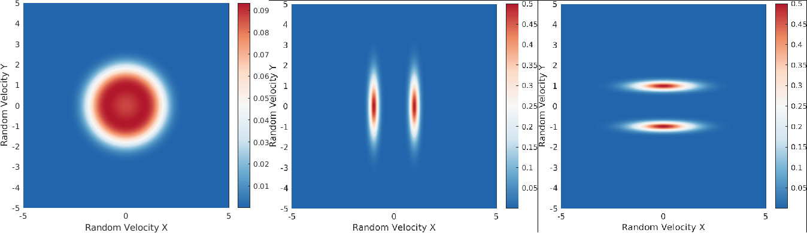
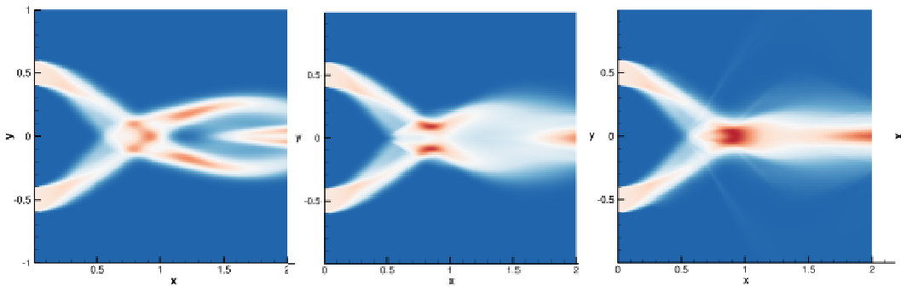
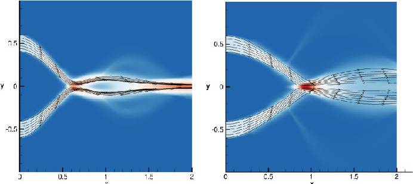

Browsing this page you will find reference to various papers, presentations, and projects that showcase Brooks' research and programming skills. Relevant figures and links are also included.
Co-Authors: Groth, Clinton P. T.; Frédérique Laurent
Maximum-entropy moment closures for predicting the behaviour of non-equilibrium rarefied gaseous flows have previously been shown to provide accurate and computationally efficient descriptions of transition-regime flows in which the usual continuum-regime Navier-Stokes-Fourier equations do not hold, and where Monte-Carlo and/or direct-discretization methods can be far too expensive for practical use [1]. Unfortunately, above second order in velocity space, there are no analytical closures for the systems of partial differential equations (PDEs) which govern the transport of the macroscopic moment quantities and instead approximate closures have been sought. In this study, a bi-Gaussian approximation to the number density function (NDF) is used to approximate the both the maximum-entriopy NDF and closing moment fluxes of fourth-order 14-moment maximum-entropy closure associated with fully multi-dimensional kinetic theory. Prior investigation by Laplante and Groth [2] of the bi-Gaussian approximation has shown that it can produce excellent results for one-dimensional univariate kinetic equations which compare very well with the actual maximum-entropy solutions as well as the interpolative-based maximum-entropy-based (IMEB) closure of McDonald and Torrilhon [3]. A potential benefit of the bi-Gaussian approach is that an essentially closed-form analytical solution results for the NDF. In this study, the extension of the bi-Gaussian closure to the multi-dimensional case is considered and compared to the equivalent multi-dimensional IMEB closure [3] [4]. It is shown that the bi-Gaussian closure suffers from several deficiencies: firstly, valid region of realizable space for the bi-Gaussian closure is a small subset of realizable 14-moment space; and secondly, the closure and moment equation eignestructure for solutions associated with zero heat flux become undefined. 
Image: Number density function for (left) actual Maximum Entropy distribution, (middle) Bi-Gaussian distribution with small step in heat transfer in the X direction, and (right) Bi-Gaussian distribution with small step in heat transfer in the Y direction.
Supervised by Groth, Clinton P. T.
In this thesis, multiple Eulerian-based maximum entropy spray models for higher order velocity space are extended to allow the modelling of sprays with different sized droplets. The moment space considered includes 14 moments for fully three-dimensional physical space. Eulerian-based moment methods are possibly less expensive than Lagrangian-based particle tracking methods and yet can provide statistical information on computational grids of infinitesimal size. In particular, the 5-,10-, and 14- moment maximum entropy velocity moment closures are applied witha corresponding 5-moment maximum entropy size model coupled using the Coupled Size Velocity Moment (CSVM) method. The resulting method is applied to one-dimensional closures producing 11 coupled size and velocity moments. The numerical implementations of so-called "partially" polydisperse versions of these spray models, whereby only bulk velocity depends on droplet size, are presented along with results for canonical particle trajectory crossing problems which demonstrate the predictive capabilities of each model. 
Funding: Green Aviation Research and Development Network (GARDN), Southern Ontario Smart Computing for Innovation Platform (SOSCIP), MITACS, Pratt & Whitney Canada
Computational Resources: Southern Ontario Smart Computing for Innovation Platform (SOSCIP), Compute/Calcul Canada
Co-Authors: Groth, Clinton P. T.; Xu, Hang; Hu, John T. C.
The use of Eulerian-based moment closure methods for the modelling of disperse liquid sprays offers numerical advantages over other commonly used methods. In particular, Lagrangian-based methods can be computationally expensive and efficient parallel implementations of the algorithms are often difficult to achieve when coupled with an Eulerian treatment for the background gas phase. Eulerian-based moment methods are less expensive as the costs of solving at a minimum an eight dimensional kinetic equation for the number density function (NDF) describing the distribution of liquid droplet droplets in terms of their size and velocity is replaced by solving a coupled system of partial differential equations describing the transport of various macroscopic quantities or moments in just physical space and time. In this study, two approximate high-order maximum-entropy-based closures in velocity space are coupled to a 5-moment maximum-entropy closure in droplet size space to model the behaviour of polydisperse polykinetic sprays. The two approximations of the high-order 14-moment maximum-entropy closures in velocity space (14-moment in three space dimensions, 5-moment in one space dimension) considered here are an interpolative-based approach and a closure based on a bi-Gaussian approximation for the distribution function. A coupled size velocity moment method (CSVM) is then adopted in which the size conditional velocity moments representing droplet mass and momentum are then taken to be polynomial functions of droplet size, whereas other higher-order moments are assumed to be equal for all droplet sizes. Theoretical considerations and numerical implementation of such a "partially" polydisperse high-order closure treatment is presented along with results for canonical particle trajectory crossing problems which demonstrate the predictive capabilities of the proposed closures. 
Supervised by: Jeff Defoe
Teammates: Richelle Dolan, Andrei Tineghe, Mitchell Campbell, Justin Abbott, David Carrick
The SAE Aero Design competition is an international competition where students from universities around the world compete to build model remote controlled aeroplanes to complete a set of pre-defined tasks. In the 2015 micro class competition, a scoring formula was defined and each team was required to design a remote controlled aeroplane which could carry a payload secured inside of a structural compartment. An additional constraint was that the disassembled form of the aeroplane had to fit within a tube of 6 inches diameter. Additional points were awarded based on the length of the tube and bonus points were awarded if the team could demonstrate rapid deployment via assembling the aeroplane in under 90 seconds.
The Windsor Aero Design team designed and built an aeroplane with a foldable wing allowing for a chord length of 6.7 inches with a wing span of 58 inches and a total aircraft length of 27.5 inches. This aeroplane, when disassembled, was able to fit into a container of length 19.25 inches.
One of Brooks' primary contributions to this project was his ability to translate real world properties into computer programming language. He wrote a script in the Octave programming language which, for specified initial takeoff speed, air properties, targeted cruising speed, and aspect ratio, computed the probable competition score allowing the team to select parameters that would provide the best possible competition score.
The result of this project was a first place prize for the team's technical presentation and third place overall at competition.